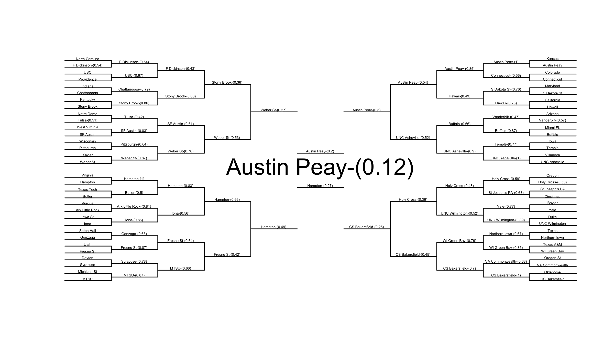
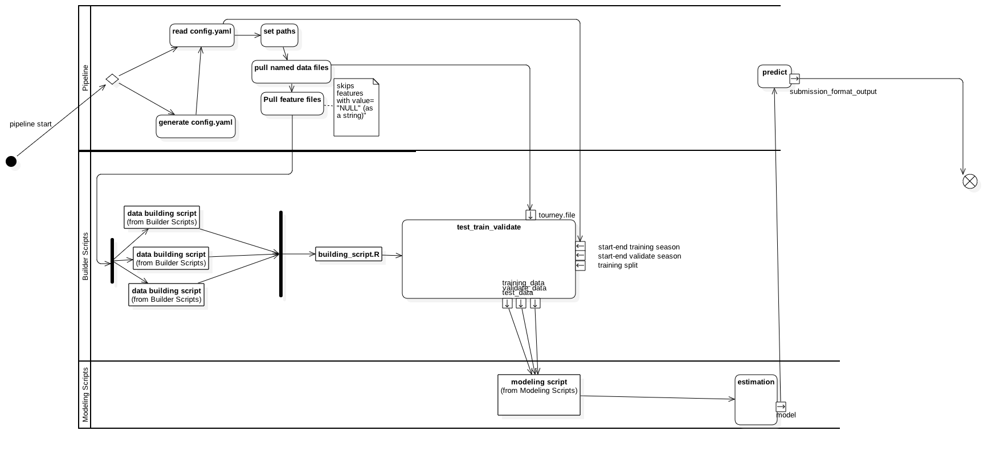

tourney.filetest_data, training_data, and validation_datamodel in memory that can be used with predict
model and produce validation data (i’ll add this in tomorrow)Run with source("pipeline.R") from R.
create a config.yaml file that specifies the following:
```{yaml}
path_to_NCAA: ~/Google Drive/NCAA/ repository_location: /s/Programming/NCAA_2016
first.training.season: 2005 last.training.season: 2009
first.validation.season: 2010 last.validation.season: 2015 training_split:.3
data_building_files: - data_building/other_scripts.R - data_building/builder_script.R # you should probably always include this file last in this list.
model_files: - modeling_scripts/pre_analysis.R # a script to run - modeling_scripts/analysis03142015.R
data_to_load: # These are specified as dataset_name: dataset_location – relative to the ncaa folder kaggle.submission.file: 2016_competition/data_2016_specific/kaggle_dataset/SampleSubmission.rds season.file: 2016_competition/data_2016_specific/kaggle_dataset/RegularSeasonDetailedResults.csv tourney.file: 2016_competition/data_2016_specific/kaggle_dataset/TourneyCompactResults.csv
features_to_add: Seed: 2016_competition/data_2016_specific/kaggle_dataset/TourneySeeds.rds RPI: General_Data/some_file.csv # Note, the name of the element (e.g. RPI) is used as the name in this list. # The name of the element here should correspond to the name of the name of # the column for the feature in the datafile (e.g. some_file.csv should have a # column named RPI). output_file: submission.csv # this is where the submission csv will be generated relative to repo root.
```
Alternatively, you can specifiy this in a file called config.R and the pipeline will generate the corresponding yaml file for you. This is a more finicky way of doing this though and the file must be structured very similarly to config.R.example.
this is required. it is the path to the NCAA folder on your local machine.
this is required. it is the path to this repo on your local machine.
These are specified as feature_name: feature_location – relative to the ncaa folder. The feature dataset should have 3 columns: one for
these are the names and locations of the datasets to load in. they are specified relative to the root of the NCAA folder. At least one of these should be named `tourney.file’. if using the builder_script, this dataset will form the base dataset into which features are merged. The tourney.file in the example above is the location of the compact tourney results file supplied by kaggle.
these is used by getTourneyData() in the builder_script to properly subset
data for a specified set of seasons. This should not overlap with the
validation.season parameters.
these is used by test_train_validate_split() in the builder_script to properly
subset data for a specified set of seasons for validation. This should be the
range of seasons over which we want to predict outcomes and submit. In the final
round of the competition, this will be 2016 for both values
This is the proportion of the training data that you want the builder_script to
hold out for cross validation of the trained model. if your modeling script uses
somethign like carat where you can do more advanced cross validation, you can
set training_split: 0 in yaml (or put training_split=0 in the data_recipe
list in config.R) This will prevent builder_script.R from splitting the
training data (builder_script.R will still return test_data, but it will be
NULL)
these are files specified relative to the repo root. They are files you want to
run to manipulate data prior to model estimation. You should probably keep the
builder_script as the last element of this list as this script will properly
transform the tourney data and load features in the features_to_add list. The
builder_script file will expect a dataframe called tourney.file to be in memory
and it will return three objects at its conclusion: test_data, training_data
and validation_data.
these are the model building files that are run to generate model estimates. these scripts should expect an object called tourneydata and return a model object with a standard predict method.
This is where the submission csv will be generated relative to repo root.
I will also add a final step that takes the model object returned from model_files and use it to produce a kaggle- formatted submission file.